| メニュー | イメージ | 説明 |
|---|---|---|
| 1.ファイル |  |
参照）エクスポート可能なファイル |
| 2.編集 | 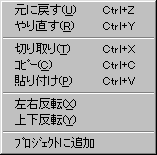 |
|
| 3.プロジェクト |  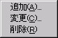
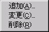
|
|
| 4.パレット |  |
|
| 5.描画 | 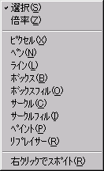 |
|
| 6.表示 | 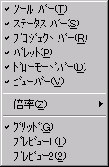 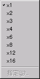 |
|
| 7.ツール |  |
|
| 8.ウィンドウ | 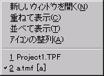 | 他のアプリケーションと一緒ですので、説明は省略。 |
| 9.ヘルプ | 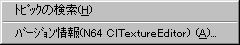 |
|
| コントロールバー | イメージと説明 | |
|---|---|---|
| 1.ツールバー | 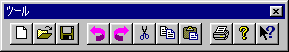 | |
|
新規作成 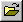開く  保存 保存元に戻す やり直す 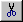切り取り コピー  貼り付け 貼り付け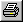印刷 バージョン情報 ヘルプ |
||
| 2.ドロー・ツールバー | 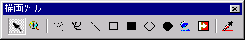 | |
 選択 選択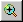ズーム ピクセル ペン ライン ボックス ボックスフィル サークル サークルフィル 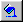ペイント リプレイサー 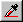右クリックでスポイト（トグルボタン） |
||
| 3.ビュー・ツールバー | 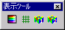 | |
|
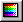パレット・ダイアログバーのＯＮ／ＯＦＦ グリッドのＯＮ／ＯＦＦ 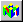IS-VIEWER64へのプレビュー１のＯＮ／ＯＦＦ 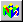IS-VIEWER64へのプレビュー２のＯＮ／ＯＦＦ |
||
| 4.ステータスバー | ||
|
左側にはカーソル位置のコントロール（ボタンやメニュー）の説明が表示されます。 「(85,135) 200%」は、ペンの座標と拡大率を表示しています。 「(320,240) 8bit」は、編集中のイメージのサイズとビットを表示しています。 |
||
| 5.パレット・ ダイアログバー |
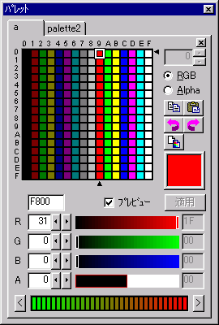 |
パレットが増えるたびにページが増えます。 4bit/8bitのパレットのリストが表示され、マウスでペンの色を選択できます。 ダブルクリックで カラー設定ダイアログが開き、 指定の色を変更する事ができます。 コピー・ 貼り付け・ アタッチ |
| 6.プロジェクト・ ダイアログバー |
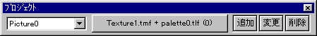 | |
| 左から、登録されたピクチャー名・ イメージとパレットの組み合わせを表示しています。 （これはボタンになっており、イメージとパレットを開く事ができます。）・ 続くボタンには、 追加ボタン・ 変更ボタン・ 削除ボタン があります。 | ||
- テクスチャ・イメージ・ウィンドウ
-
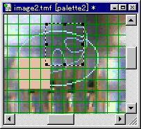
もし、NO PALETTEと表示されている場合は、パレットが割り当てられていない為表示できない事を示しています。
その場合、パレット・ダイアログバーの「アタッチ」によって色を割り当てる事でイメージを表示できます。
- テクスチャ・プロジェクト・ウィンドウ
プロジェクトに含まれる情報をツリー構造で表示しています。
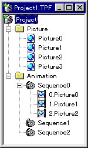
ドラッグ＆ドロップや右クリックのポップアップメニューで操作できます。
Project
プロジェクトのトップノードです。移動や削除は出来ません。
右クリックのポップアップメニューでプロパティを編集する事ができます。
Picture
ピクチャーを登録するノードです。
登録されたピクチャーはドラッグ＆ドロップで移動できます。
また、シーケンスにドロップする事でアニメーションパターンを追加できます。
Animation
アニメーションを管理するノードです。移動や削除はできません。
右クリックのポップアップメニューでシーケンスを追加する事ができます。 Sequence
アニメーションパターンを管理するシーケンスノードです。
右クリックのポップアップメニューで、アニメーションパターンとしてピクチャーを追加できます。
登録されたピクチャーはドラッグ＆ドロップで移動可能です。
- テクスチャ・プロジェクト・ウィンドウ
- ファイル新規作成・ダイアログ
- プロジェクトページ

TPFファイル名
ディレクトリ名、拡張子を除く重複しないプロジェクト名を指定して下さい。
TPFディレクトリ
プロジェクトファイルが保存される作業ディレクトリとなるディレクトリ名を指定して下さい。
TMFディレクトリ
TMFファイルが保存される作業ディレクトリとなるディレクトリ名を指定して下さい。
省略した場合、TPFディレクトリと同じになります。
TLFディレクトリ
TLFファイルが保存される作業ディレクトリとなるディレクトリ名を指定して下さい。
省略した場合、TPFディレクトリと同じになります。
- イメージページ

横幅・縦幅
サイズをピクセル単位で入力して下さい。
最小は１×１。最大は1024×1024です。
ビットモード
4ビット（16色）／8ビット（256色）から選びます。
- パレットページ
-
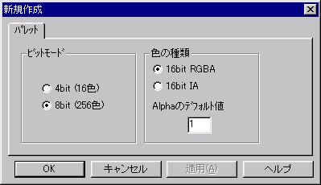
ビットモード
パレットのビットモードを指定します。
（8bitの256色は、4bitの16色×16ブロックとして扱う事が可能です。）
色の種類
色の種類は、16bit RGBAと、16bit IAから選びます。
16bit RGBA/IAについては、N64デベロッパーマニュアル大全集を参照して下さい。
Alphaのデフォルト値
新規作成時のアルファ値を指定します。
16bit RGBA時は、０か１です。
16bit IA時は、０〜255までの整数です。
- イメージページ
- プロジェクト・プロパティ・ダイアログ
このダイアログはプロジェクトのベースとなる作業ディレクトリを設定するダイアログです。
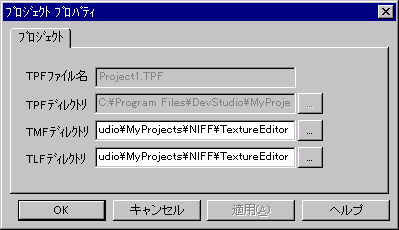- ピクチャ編集ダイアログ
これらのダイアログはプロジェクトメニューの「ピクチャー」の「追加」・「変更」を選ぶか、 プロジェクト・ダイアログバーの「追加」・「変更」を選ぶか、 プロジェクト・ウィンドウのピクチャーノードで、右クリックで現れる追加・編集メニューによって呼び出されます。
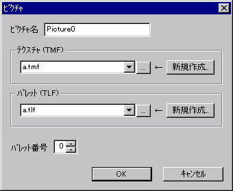重複しないピクチャ名を与え、TMF/TLFの組み合わせを選び、ＯＫを押すことで追加・編集できます。
コンボボックスのリストの中身は、プロジェクトのプロパティで設定されたディレクトリに含まれるファイルを表示しています。
新規作成したい場合、重複しない名前を入力欄に書き込み、「新規作成」ボタンを押して作成できます。
- カラー設定ダイアログ
- 16bit RGBA
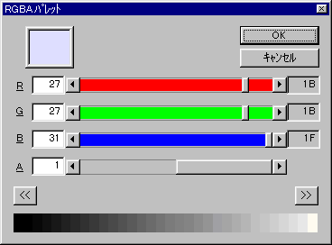 - 16bit IA
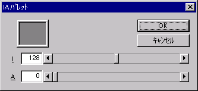
これらのダイアログはパレット・ダイアログバーのカラーをダブルクリックする事で呼び出されます。
- アバウト・ダイアログ
このダイアログはヘルプメニューの「バージョン情報」から呼び出されます。

- オプション設定ダイアログ
このダイアログではアプリケーションの既定の設定を変更するダイアログです。

TMF新規作成時にプロジェクトを利用するか問い合わせる
プロジェクト利用の問い合わせダイアログを開かせたい場合にチェックを付けて下さい。- プロジェクト利用の問い合わせダイアログ
このダイアログは、TMF新規作成時にプロジェクトを開いていない時に促されるメッセージです。
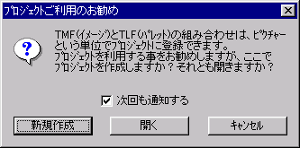
この時点で、プロジェクトを作成するなら「新規作成」を、開くなら「開く」を、プロジェクトを開きたくないなら「キャンセル」を選んで下さい。
以後、このメッセージをキャンセルしたい場合は、チェックを外していずれかを選択すると、問い合わせを行わなくなります。
再度、問い合わせを行いたい場合は、ツールメニューのオプション設定ダイアログで設定して下さい。
- プロジェクトページ

{kind=link}
{kind=link}